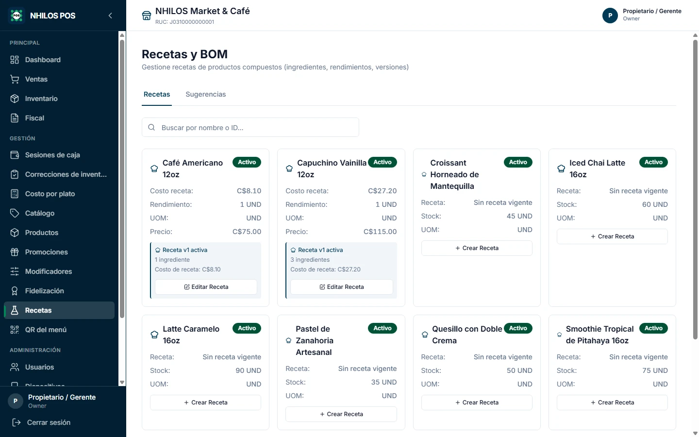
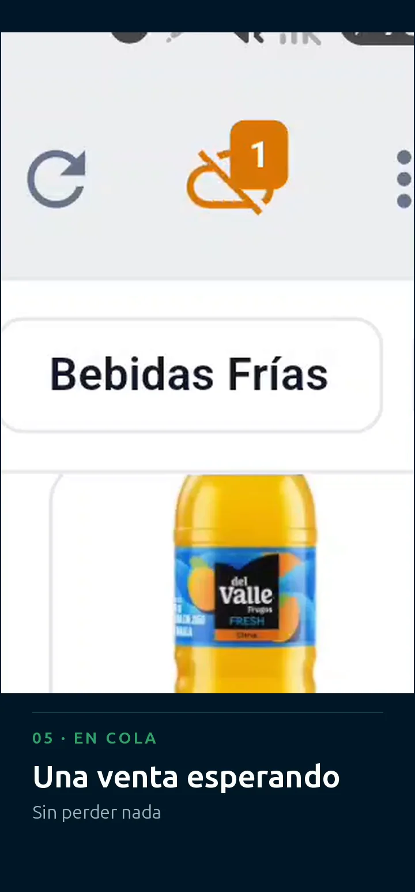

Cobra productos terminados con control de unidades en catálogo, sin cargar recetas ni ingredientes donde no hace falta.
Food parks y food courts · Managua y toda Nicaragua
Software para food park: cada puesto con su catálogo y su cobro, en un solo sistema
Un sistema para todo el park: cada puesto con su catálogo y su cobro, el administrador ve la operación desde el panel web. Puestos de reventa y cocinas con recetas conviven en el mismo sistema. Correlativo DT 09-2007.
01 · Alcance real
¿Qué es NHILOS POS en un food park?
En Nicaragua, un food park o food court suele empezar resolviendo cada puesto con un cuaderno o con una caja de un solo rubro, y ahí no se distingue lo que vende cada puesto. Con NHILOS POS, el park contrata una suscripción como negocio; cada puesto opera su sección del catálogo y cobra en su terminal, con cobro bimoneda en córdobas y dólares y correlativo DT 09-2007. Los puestos de reventa (bebidas embotelladas, botanas, postres comprados) trabajan en modo simple, mientras las cocinas activan recetas e insumos dentro del mismo sistema.
Qué significa "cada puesto con su catálogo": el catálogo es uno y se organiza por puesto mediante categorías. Cada puesto tiene su sección, con sus platos y sus precios, y su propia terminal para cobrar su turno.
Cada puesto: su catálogo, su cobro, su turno
01 / SECCIÓN
Productos y precios ordenados por puesto
El cajero abre la categoría que corresponde a su puesto, selecciona los productos con sus precios definidos y cobra sin buscar entre artículos ajenos.
02 / COBRO
Terminal propia y pago bimoneda
Cada terminal registra sus ventas en córdobas o dólares, calcula el vuelto y emite el comprobante con su correlativo consecutivo sin depender de otra caja.
03 / TURNO
Arqueo por turno y usuario
Al cierre de jornada, cada puesto realiza su apertura y arqueo por turno y usuario para cuadrar efectivo, pagos electrónicos y anulaciones del día.
Tres puestos o veinte: el park también es pequeño
Un food park en Managua o en cualquier departamento de Nicaragua no tiene que ser un complejo enorme para ordenar sus puestos. El mismo sistema cubre operaciones pequeñas y medianas sin exigir estructura corporativa:
- Park de tres o cuatro puestosPatio pequeño con varias barras o cocinas que necesitan orden desde el primer día.
- Patio de comidas familiarUn solo dueño con varios puestos propios bajo una misma administración.
- Plaza de comidasEspacio abierto de barrio o carretera con ofertas distintas en un mismo lugar.
- Food court de centro comercialPuestos con giro rápido en mostrador que cobran en su propia terminal.
- Park con locatarios independientesCada locatario factura su propia operación con su suscripción y autorización.
- Park con un puesto que cocina y otro que revendeCocinas con recetas conviviendo con puestos de bebidas o botanas en modo simple.
Si todos los puestos son del mismo dueño: no necesitas la historia de locatarios. Operas con una suscripción, tus puestos organizados por categorías y tus terminales cobrando en orden.
Grabación real del panel web · datos de demostración
Qué prueba esta grabación: el recálculo automático del costo por plato en el panel web de un negocio de demostración (NHILOS Market & Café) cuando entra un nuevo lote de insumo.
Límite declarado: esta grabación corresponde al panel de un solo negocio; no muestra varios puestos ni dos terminales cobrando en simultáneo.
02 · Gobernanza del park
¿Cómo opera el administrador del park?
En la administración de food park, el administrador del park ve su operación desde el panel web, y las ventas de los puestos llegan al panel cuando la conexión está disponible.
Qué ve el panel web
- Las ventas registradas por los puestos conforme cada terminal sincroniza al tener conexión.
- El catálogo organizado por categorías, precios, recetas de las cocinas que las activen y costos.
- Sesiones de caja, arqueos por turno y usuario, y el historial de anulaciones con motivo.
Qué no hace el sistema
- No junta varios negocios distintos en un tablero de cadena ni promete métricas entre sucursales separadas.
- No ofrece una caja única para cobrar varios puestos a la vez: cada terminal cobra lo suyo.
- No comunica terminales entre sí ni envía pedidos de forma automática hacia monitores externos de cocina.
Roles: el administrador administra, el locatario opera
Administración del park
Accede al portal del propietario en web, habilitado al terminar la puesta en marcha. Gestiona el catálogo por categorías, revisa cierres de turno y consulta las ventas que llegan desde las terminales.
Operación del puesto
Opera directamente en su terminal enrolada para cobrar pedidos, registrar pagos bimoneda y cerrar su arqueo de turno sin entrar a la configuración general del negocio.
Quién emite en un food park: las dos estructuras soportadas
Rige un principio simple: quien vende es quien factura. El sistema registra al emisor, no lo sustituye.
| Estructura del park | Quién emite | Cómo se organiza en NHILOS POS | Estado |
|---|---|---|---|
| El park es dueño de sus marcas y factura todo bajo su RUC | El park, con su autorización DGI | Un negocio, una suscripción, una autorización y una serie para sus puestos organizados por categorías. | Soportado |
| Cada locatario independiente tiene su RUC y vende lo suyo | Cada locatario, con su propia autorización DGI | Cada locatario contrata su propia suscripción y opera con su propia autorización y correlativo. | Soportado |
03 · Operación mixta
Puestos que revenden y cocinas que preparan, en el mismo park
En un software para food park con múltiples puestos es normal que una barra venda gaseosas o postres listos mientras el puesto de al lado prepara platos con varios ingredientes. En NHILOS POS el control se activa por puesto, no por todo el park: quien revende trabaja en modo simple y quien cocina activa recetas e insumos.
Cada plato vendido descuenta sus ingredientes y refleja el costo por plato para proteger el margen de cada receta.
Empieza en modo simple y puede sumar recetas solo en las bebidas o preparaciones que realmente lo necesiten.

Captura real del panel web · datos de demostración
Qué muestra esta captura: en un mismo catálogo conviven productos con receta activa y costo calculado (Café Americano, Capuchino Vainilla) junto a productos sin receta vigente que se controlan por unidad (Croissant, Iced Chai Latte).
Recetas, kardex y merma se trabajan completos en la guía dedicada:
control de inventario y kardex: recetas, insumos y merma04 · Sábado sin señal
¿Qué pasa cuando se cae el internet en el park?
Cuando falla el enlace del local en hora pico, cada terminal enrolada sigue cobrando con su catálogo cargado y emite el ticket con su correlativo consecutivo. Al volver la red, las ventas pendientes suben al panel web en orden.
- Condición clara: la terminal debe haber quedado configurada con tu catálogo antes del corte.
- Cada terminal por su lado: no hay comunicación entre terminales por red local mientras no existe conexión.
- Sincronización al reconectar: la cola de ventas se vacía en orden hacia el panel del administrador cuando regresa la señal.

Captura editada de terminal real · datos de demostración05 · Cumplimiento fiscal
Facturación por puesto conforme a la DT 09-2007
Cada comprobante que emite cada puesto sigue la misma mecánica de facturación: el sistema protege el orden del correlativo y el rastro de cada anulación, mientras que la autorización fiscal corresponde siempre al contribuyente que emite.
Mecánica verificada en cada comprobante
Numeración consecutiva inalterable que no permite saltos ni borrados, y anulación únicamente con motivo auditado vinculado al comprobante original.
Responsabilidad del contribuyente
La autorización ante la DGI (carta, código y rango de numeración) la posee el contribuyente que factura. Cómo se organiza fiscalmente un park con sus locatarios se define con su contador.
06 · Estructura de suscripción
¿Cuánto cuesta para todo el park?
La suscripción es del negocio (el park), no se cobra por cada puesto ni por marca cuando operan bajo la misma administración. Las terminales adicionales se suman como complemento con enrolamiento según la cantidad de cajas que necesites.
El alcance de cada plan, la implementación y las condiciones de terminales adicionales están publicados en una sola tabla transparente, sin cifras inventadas aparte. Si operas varias sucursales independientes en distintas direcciones, ese caso se evalúa aparte de un food park.
Tarifario público
ver planes y precios de NHILOS POS
07 · Preguntas frecuentes
Preguntas frecuentes sobre el POS para food parks
¿Cada puesto necesita su propio sistema?
No: en Nicaragua, NHILOS POS cubre el park bajo una suscripción como negocio cuando los puestos operan bajo la misma administración. El catálogo es uno y se organiza por puesto mediante categorías, con su propia terminal para cobrar cada sección; si cada locatario independiente factura con su propio RUC, contrata su propia suscripción y opera con su autorización.
¿Puede el administrador ver la operación del park?
En Nicaragua, con NHILOS POS el administrador del park ve su operación desde el panel web, y las ventas de los puestos llegan al panel cuando la conexión está disponible. El acceso al portal del propietario queda habilitado al terminar la puesta en marcha, sin prometer paneles de múltiples cadenas ni reportes entre sucursales.
¿Un puesto que revende y una cocina pueden usar el mismo sistema?
Sí: en Nicaragua, NHILOS POS permite que puestos de reventa en modo simple y cocinas con recetas e insumos convivan dentro del mismo park. El control de ingredientes se activa por puesto y no obliga a todo el park a llevar recetas; el detalle completo está en control de inventario y kardex: recetas, insumos y merma.
¿Qué pasa con la facturación de cada puesto?
En Nicaragua, NHILOS POS aplica en cada comprobante de cada puesto la mecánica que exige la DT 09-2007: numeración consecutiva inalterable y anulación solo con motivo auditado. La autorización ante la DGI la posee siempre el contribuyente que emite, y la división completa se explica en mecánica de facturación DT 09-2007: qué garantiza el sistema y qué te corresponde a ti.
¿Funciona sin internet?
Sí: en Nicaragua, cada terminal enrolada de NHILOS POS sigue cobrando cuando se cae la red siempre que quedó configurada con tu catálogo, emitiendo el ticket con su correlativo consecutivo y guardando cada venta para subirla en orden al reconectar. No hay comunicación entre terminales por red local, y los límites completos están en cómo sigue la venta sin internet: POS sin conexión.
¿Cuánto cuesta para el park?
En Nicaragua, la suscripción de NHILOS POS se cotiza por negocio y no por puesto ni por marca, mientras que las terminales adicionales se suman como complemento con enrolamiento. Los planes públicos, el alcance de la implementación y el detalle de terminales están en ver planes y precios de NHILOS POS.
08 · Siguiente paso
Solicita una demo con la operación de tu park
Preparamos el recorrido según la cantidad de puestos, qué puestos cocinan y cuáles revenden, y la estructura fiscal con la que opera tu park. Al finalizar te llevas la cotización y el cronograma real de puesta en marcha.
- Demo guiada con escenario armado según tu tipo de negocio y tu prioridad operativa.
- Revisión clara de puestos en modo simple, cocinas con recetas y número de terminales.
- Cotización con cronograma real de puesta en marcha al terminar la sesión.